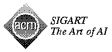

CMU Artificial Intelligence Repository


AI Repositories and Resource Lists
General AI
- CMU Artificial Intelligence Repository
Maintained by Mark Kantrowitz <AI.Repository@cs.cmu.edu>
- NRC AI Page
Including an excellent AI Resources List.
Compiled by the Knowledge Systems Laboratory of the Institute for
Information Technology at the National Research Council of Canada.
-  ACM SIGART
ACM Special Interest Group on Artificial Intelligence
Information on SIGART, excellent list of conferences and workshops,
back issues of the SIGART bulletin, AI-related jobs, journals and news,
and other WWW links.
Maintained by Chris Welty <weltyc@sigart.acm.org>
- World-Wide Web Virtual Library: Artificial Intelligence
Maintained by Jonathan.Bowen@comlab.ox.ac.uk
- BUBL (Bulletin Board for University Libraries) Gopher
from Glasgow, Strathclyde, and Bath.
- AI, Cognitive Science,
and Robotics
Maintained by Stephanie Warrick <swarrick@cs.ucl.ac.uk>
Specialized Topics
AI.Repository@cs.cmu.edu